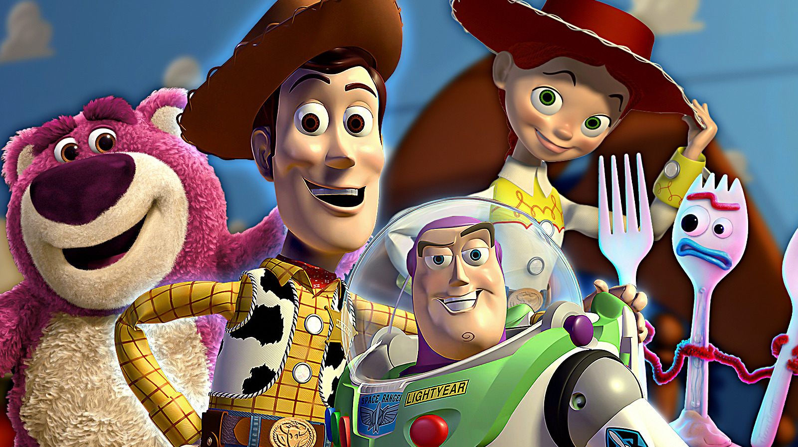

Disney anuncia Toy Story 6 e desperta a fúria dos fãs
Continuação inesperada divide opiniões entre nostalgia e saturação da franquia
Publicado hoje • Cinema / Animação

A confirmação de um sexto filme da franquia Toy Story provocou uma forte reação entre fãs da animação nas redes sociais. Muitos admiradores da série demonstraram preocupação com a possibilidade de a história continuar sendo prolongada.
Para grande parte do público, Toy Story 3 já havia encerrado de forma emocionante a trajetória dos personagens clássicos, especialmente na famosa cena de despedida entre Andy e seus brinquedos.
Quando Toy Story 4 foi lançado, parte dos fãs já havia demonstrado receio sobre a necessidade de continuar expandindo a franquia.
Com o anúncio de mais um filme, debates voltaram a dominar fóruns e redes sociais, dividindo opiniões entre aqueles que desejam ver mais histórias e aqueles que acreditam que a saga deveria ter sido encerrada.
Mesmo com as críticas iniciais, especialistas apontam que a franquia continua sendo extremamente popular entre diferentes gerações de espectadores.
O sucesso comercial das produções anteriores também mostra que ainda existe grande interesse do público em revisitar os personagens clássicos da animação.
Executivos da Disney afirmam que o novo filme pretende trazer uma abordagem inédita para a história, explorando novos temas e situações para os personagens.
Enquanto isso, fãs continuam aguardando mais informações sobre o projeto, incluindo detalhes sobre a trama e possíveis novidades no elenco de vozes.